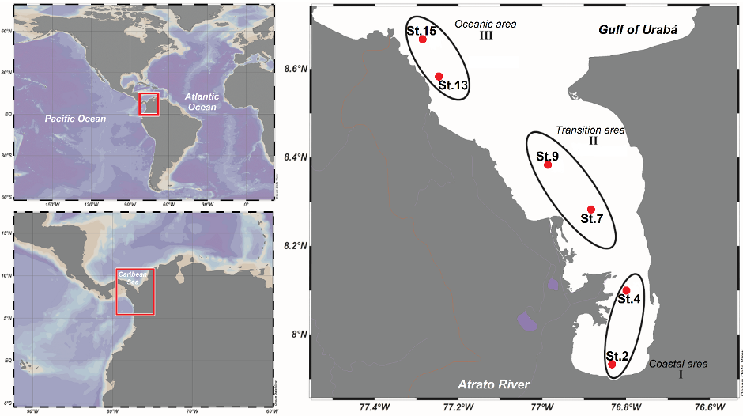
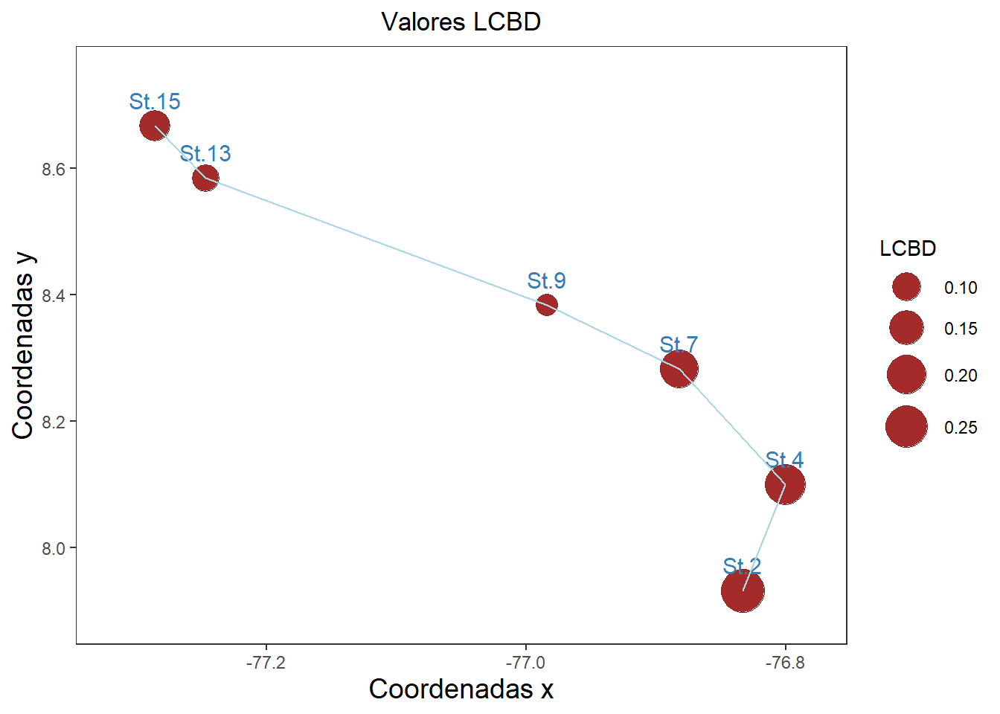
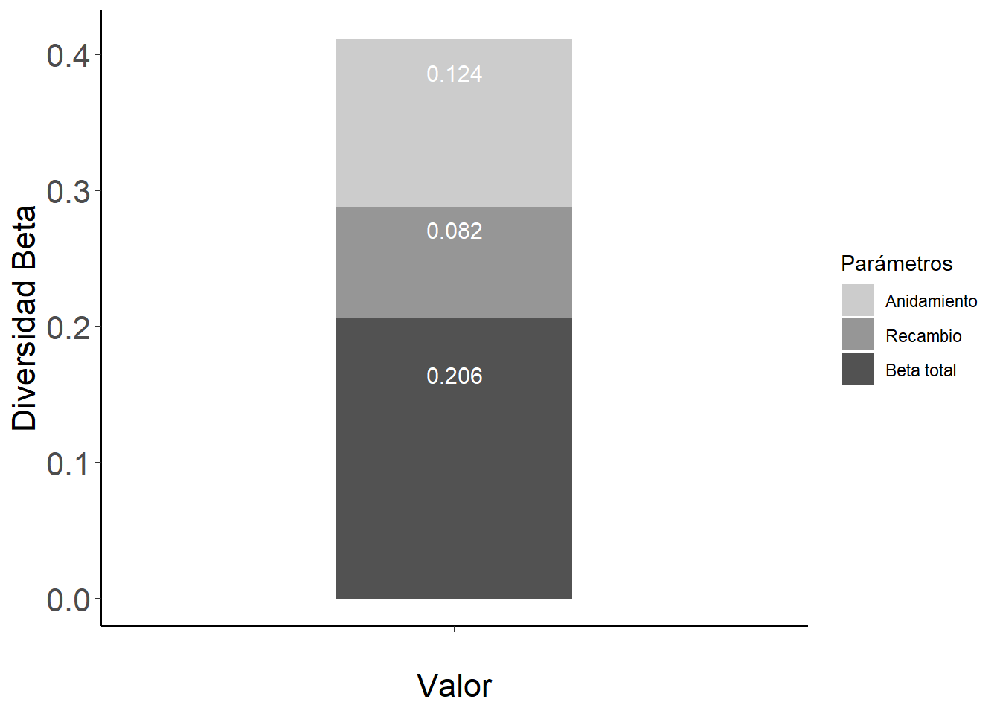
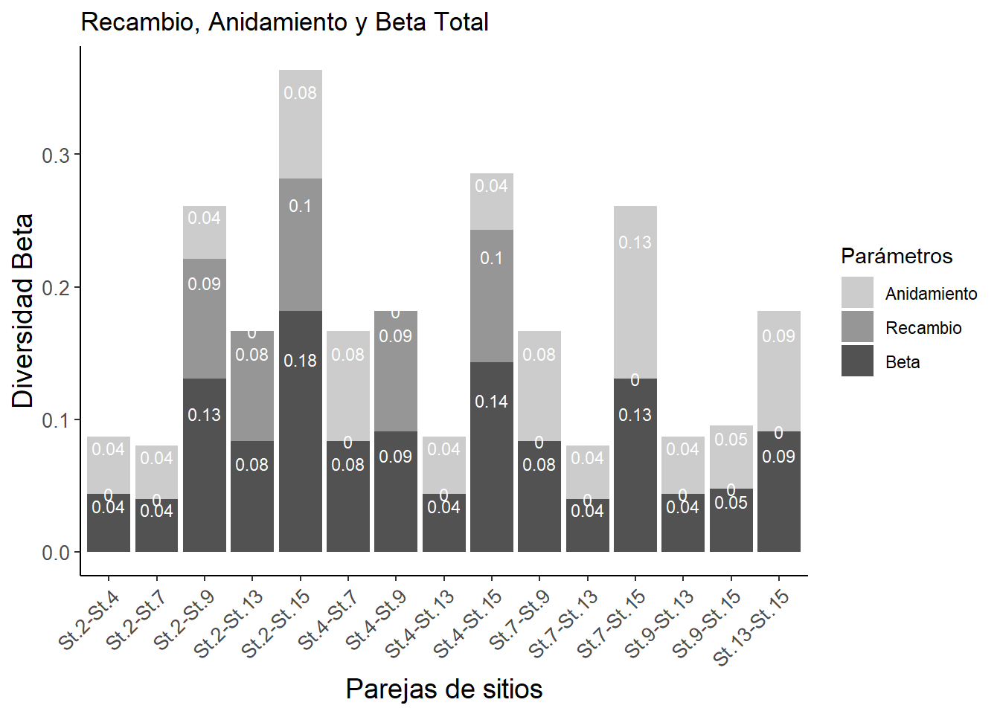
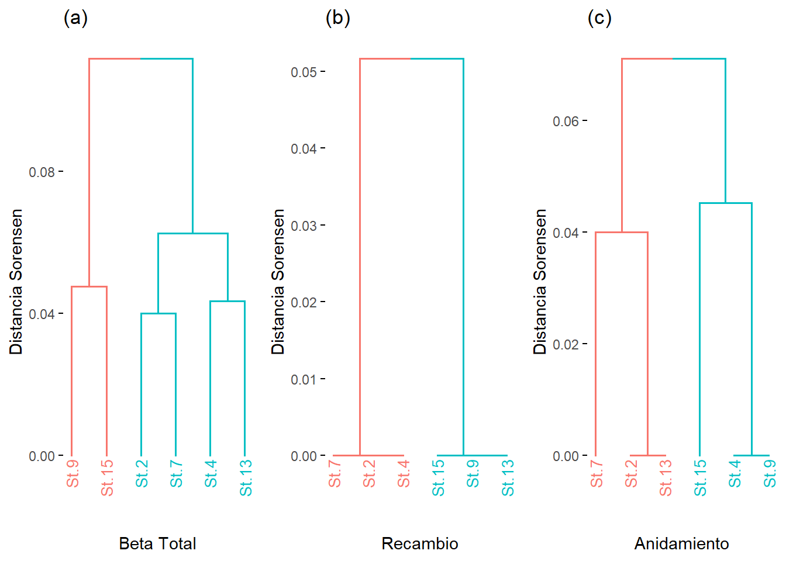

Resumen
El presente ejercicio consiste en el procesamiento inicial de los datos entregados por el profesor Lenin Florez para dar respuesta al siguiente requerimiento:
12. Results. It is suggested to calculate Shannon-Wiener diversity index and Pielou evenness index values to assess zooplankton diversity.
A pesar de que el enfoque es hacia la diversidad alfa, se realizará el procedimiento para evaluar la diversidad beta a dos escalas: (1) Beta total o general con datos de abundancia y con datos binarios y (2) Beta entre parejas de sitios con datos binarios o de presencia-ausencia.
Paso a paso para la organización de los datos.
Paso 1. Cargar Librerías
Se cargan las librerías para el análisis de diversidad beta, especialmente la betapart, para la propuesta de Baselga (2010) con datos binarios y la adespatial, para la diversidad beta con datos de abundancias.
Paso 2. Base de datos de los taxones
Se utilizará la base de datos con los 13 grupos biológicos que se relacionan a continuación (Tabla 1).
| Estación | Calanoida | Cyclopoida | Harpacticoida | Huevos de peces | Larva de crustaceo | Larva Nauplio | Larva Zoea | Larvas de Crustaceo | Larvas de peces | Luciferidae | Otros | Quetognatos | Sergestidae |
|---|---|---|---|---|---|---|---|---|---|---|---|---|---|
| St.2 | 13300 | 428 | 50 | 168 | 0 | 57 | 44 | 16 | 2562 | 12411 | 30 | 86 | 1219 |
| St.4 | 11006 | 947 | 33 | 135 | 0 | 282 | 406 | 0 | 98 | 11659 | 234 | 385 | 397 |
| St.7 | 288 | 29 | 1 | 6 | 124 | 12 | 59 | 1 | 25 | 20 | 48 | 74 | 24 |
| St.9 | 1615 | 125 | 45 | 20 | 38 | 0 | 10 | 0 | 27 | 6 | 93 | 81 | 8 |
| St.13 | 3911 | 237 | 18 | 92 | 110 | 12 | 13 | 0 | 12 | 9 | 250 | 81 | 27 |
| St.15 | 3362 | 307 | 4 | 2 | 112 | 0 | 4 | 0 | 0 | 5 | 179 | 202 | 16 |
Si los nombres de los taxones son demasiado largos, se pueden abreviar con el número de letras que se requiera (ej: minlength = 4), esto para que las figuras que incluyan a los taxones, no queden tan saturadas de texto (Tabla 2).
| Estación | Clnd | Cycl | Hrpc | Hvdp | Lrdc | LrvN | LrvZ | LrdC | Lrdp | Lcfr | Otrs | Qtgn | Srgs |
|---|---|---|---|---|---|---|---|---|---|---|---|---|---|
| St.2 | 13300 | 428 | 50 | 168 | 0 | 57 | 44 | 16 | 2562 | 12411 | 30 | 86 | 1219 |
| St.4 | 11006 | 947 | 33 | 135 | 0 | 282 | 406 | 0 | 98 | 11659 | 234 | 385 | 397 |
| St.7 | 288 | 29 | 1 | 6 | 124 | 12 | 59 | 1 | 25 | 20 | 48 | 74 | 24 |
| St.9 | 1615 | 125 | 45 | 20 | 38 | 0 | 10 | 0 | 27 | 6 | 93 | 81 | 8 |
| St.13 | 3911 | 237 | 18 | 92 | 110 | 12 | 13 | 0 | 12 | 9 | 250 | 81 | 27 |
| St.15 | 3362 | 307 | 4 | 2 | 112 | 0 | 4 | 0 | 0 | 5 | 179 | 202 | 16 |
A continuación se genera una tabla con los nombres completos de los taxones y al frente sus nombres abreviados (Tabla 3).
| Taxones | Abreviaturas |
|---|---|
| Calanoida | Clnd |
| Cyclopoida | Cycl |
| Harpacticoida | Hrpc |
| Huevos de peces | Hvdp |
| Larva de crustaceo | Lrdc |
| Larva Nauplio | LrvN |
| Larva Zoea | LrvZ |
| Larvas de Crustaceo | LrdC |
| Larvas de peces | Lrdp |
| Luciferidae | Lcfr |
| Otros | Otrs |
| Quetognatos | Qtgn |
| Sergestidae | Srgs |
La Tabla 4 muestra la forma binaria para el cálculo de índices beta de esta tipología de valores.
| Sitio | Clnd | Cycl | Hrpc | Hvdp | Lrdc | LrvN | LrvZ | LrdC | Lrdp | Lcfr | Otrs | Qtgn | Srgs |
|---|---|---|---|---|---|---|---|---|---|---|---|---|---|
| St.2 | 1 | 1 | 1 | 1 | 0 | 1 | 1 | 1 | 1 | 1 | 1 | 1 | 1 |
| St.4 | 1 | 1 | 1 | 1 | 0 | 1 | 1 | 0 | 1 | 1 | 1 | 1 | 1 |
| St.7 | 1 | 1 | 1 | 1 | 1 | 1 | 1 | 1 | 1 | 1 | 1 | 1 | 1 |
| St.9 | 1 | 1 | 1 | 1 | 1 | 0 | 1 | 0 | 1 | 1 | 1 | 1 | 1 |
| St.13 | 1 | 1 | 1 | 1 | 1 | 1 | 1 | 0 | 1 | 1 | 1 | 1 | 1 |
| St.15 | 1 | 1 | 1 | 1 | 1 | 0 | 1 | 0 | 0 | 1 | 1 | 1 | 1 |
Paso 3. Diversidad beta general
–
3.1 Diversidad beta con datos de abundancia
Se utilizará el comando beta.div() del paquete adespatial, se calcula la diversidad beta total (BDtotal) y la suma total de cuadrados de Y (SStotal) que es la suma de los valores al cuadrado en la matriz S, Está asiciada a la varianza de Y o de la matriz de taxones (matriz de desviaciones al cuadrado de los valores de abundancia de las especies). Ap partir de la descomposición de SStotal se obtienen la descomposición de la diversidad beta en LCBD (contribución de las localidades a la diversidad beta) y SCBD (contribución relativa de las especies a la diversidad beta).
Para este ejercicio, SStotal es de 0.92 (92% de variación de las abundancias de las familias de macroinvertebrados) y la Diversidad Beta total es 0.18 (18%), lo cual muestra una baja variabilidad en la composición de taxones entre localidades, quizá debido a la resolución de Familias, que es muy general para medir esta diversidad, así como la corta distancia que se presenta entre los sitios evaluados.
SStotal BDtotal
0.92 0.18 Las abundancias de los taxones transformados con Hellinger: Calanoidea (Clnd), Larva de crutáceo (Lrdc), Luciferidae (Lcfr), son las que varían más entre los tres sitios evaluados que los hace interesantes como potenciales indicadores ecológicos, según la propuesta de Borcard et al. (2018).
Clnd Lrdc Lcfr
0.10 0.13 0.50 Las pruebas de permutación con el estadístico “holm” muestran que los valores LCBD de los sitios no son significativos, por lo cual se puede decir que las diferencias en el aporte a la diversidad beta para cada sitio, son solo cualitativas, como se verá en la siguiente figura.
[1] 0.7722 1.0000 1.0000 1.0000 1.0000 1.0000La Figura 1 muestra la distribución espacial de los aportes de las seis localidades a la diversidad beta (LCBD), basados en un cálculo de la abundancia de los grupos taxonómicos transformados por Hellinger. Los tamaños de los circulos son proporcionales a los valores de LCBD; por lo tanto, las burbujas más grandes corresponden a los sitios que más contribuyen a la diversidad beta general del conjunto de datos. En este sentido, los sitios 7, 4 y 2 son aportan a esta diversidad, orientada al cambio en la composición de de familias entre localdiades (Whittaker 1970).

3.2 Diversidad beta general con datos binarios (Familia de Baselga 2010)
Se calculará la diversidad beta general, con la propuesta de Baselga (2010), producto de las combinaciones de los tres sitios, teniendo en cuenta lo siguente: beta.SIM - βSIM. Valor del componente de recambio. beta.SNE - βSNE. Valor del componente de anidamiento, medido como fracción resultante de anidamiento de la disimilitud de Sorensen. beta.SOR - βSOR. Valor de la diversidad beta general, medida como disimilitud de Sorensen. beta.SOR = beta.SIM + beta.SNE o βSOR = βSIM + βSME
El paquete betapart permite calcular disimilitudes por pares (matrices de distancias) y por múltiples sitios, separando a los componentes resultantes de recambio y de anidamiento de la diversidad beta taxonómica (basada en incidencia y abundancia), la diversaidad funcional y la filogenética.
La Tabla 5 y la Figura 2 muestran que la diversidad beta general (beta.SOR) es baja, pues solo alcanza el 0.20 (20% de similitud de las familias entre las tres localidades).
Esto se demuestra por el dominio en el componente de anidamiento, frente al recambio. Quizá con una mayor resolución taxonómica, se puedan viasualizar patrones de recambio que se asocien a una mayor diversidad beta.
| x | Parámetros | Valor |
|---|---|---|
| beta.SIM | Recambio | 0.0819672 |
| beta.SNE | Anidamiento | 0.1237065 |
| beta.SOR | Beta total | 0.2056738 |
La Figura 2 muestra de forma gráfica a los valores de la Tabla 5.

Paso 4. Diversidad beta por parejas sitios con datos binarios (Familia de Baselga 2010)
Nota: Con solo seis sitios y con una resolución taxonómica gruesa, los resultados a esta escala de parejas de localidades pueden dar valores de cero en algunas de las combinaciones, como ocurre con el componente de recambio entre los sitios 2 con 4 y 7 y otras combinaciones de estos lugares con el resto de sitios (?@tbl-6 y Figura 3). Para el caso del recambio, los valores de cero furon muy poco frecuentes.
La @ftbl-tbl6 muestra el patrón de diversidad beta entre parejas de localidades, en donde el mayor valor se presenta entre el sitio 2 con 9 y 15, el sitio 4 con 15 y el sitio 7 con el 15.
| Sitios | Parámetros | Valores |
|---|---|---|
| St.2-St.4 | Beta | 0.0434783 |
| St.2-St.7 | Beta | 0.0400000 |
| St.2-St.9 | Beta | 0.1304348 |
| St.2-St.13 | Beta | 0.0833333 |
| St.2-St.15 | Beta | 0.1818182 |
| St.4-St.7 | Beta | 0.0833333 |
En la Figura 3 se logra observar la dominancia del recambio en los sitios 2 al 4 y sus combinaciones con la mayoría de sitios, del sitio 7 al 15 predomina el anidamiento. Es importante mencionar que lugares con un recambio importante pueden obedecer a barreras ambientales o antrópicas que promueves procesos de diversificación, comparado a los lugares en donde el anidamiento sea frecuente, para lo cual puede haber pocos cambios en la composición taxonómica, pero si en la riqueza de los grupos.

La Figura 4 presenta otra forma de comparar a las localidades. Llama la atención, que en los tres componentes de diversidad beta, se forman dos grupos, un grupo conformado por los sitios 15 y 9 y otro por los sitios 2, 4 y 7.
